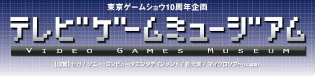
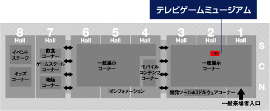
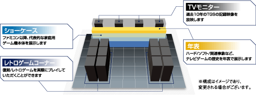
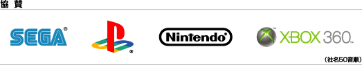

Home > 来場者の方へ > 10周年企画
10周年企画

1996年に誕生し、今年10周年を迎える東京ゲームショウ。
この10周年を記念し、ファミコン登場から現在の最新機種に至るまでの進化を体感いただける「テレビゲームミュージアム」を東京ゲームショウ展示会場内（2ホール）に特設します。
歴代の家庭用ゲーム機や、当時ヒットしたゲームタイトルを展示と年表で紹介するとともに、東京ゲームショウの10年の歴史も、当時の映像を交えながら紹介します。
また、当時のゲームタイトルを試遊できる「レトロゲームコーナー」も併設し、懐かしのゲームタイトルを実際にプレイすることができます。東京ゲームショウ10周年を記念する本企画に、ぜひ足をお運びください。



関連企画・イベントステージプログラム（8ホール）
| 9月23日（土） | |||
| 13:00〜 14:00 |
東京ゲームショウ10周年企画 テレビ・映画・音楽・ゲームなど、最新のエンタメ情報をお届けしている「日経エンタテインメント！」と、CS放送・フジテレビ721で放送され、現役ゲームファンからかつてのファミコン世代まで、幅広い層で話題になっているゲーム・バラエティ「ゲームセンターCX」。この2つの媒体がタッグを組み、東京ゲームショウ10周年を記念して、ゲームの世界のこの10年を振り返ります。スーパークリエーターからのスペシャルメッセージもステージ独占でお届けします！

有野晋哉（よゐこ） |
||
|---|---|---|---|